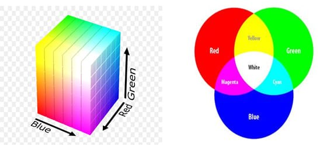

Published: 5 Oct 2020
Color spaces ဆိုတာ image တစ်ခုမှာပါတဲ့ အရောင်တွေကို သက်ဆိုင်ရာ ပုံစံအလိုက် စုစည်းထားတာမျိုးပါ။ color spaces ဥပမာလေးတွေကို တစ်ချက်လောက်ကြည့်လိုက်ရအောင်။
RGB: red,green,blue ဒီတစ်ခုက ကျွန်တော်တို့ သိနေကြ RGB format ပါ။ အရောင်သုံးမျိုးဖြစ်တဲ့ Red,Blue,Green ကို စိတ်ကြိုက်ပေါင်းစပ်ပြီး မတူကွဲပြားတဲ့အရောင်တွေကို ထုတ်နိုင်ပါတယ်။ တစ်ရောင်ချင်းစီမှာ color depth တွေရှိပြီး Memory အနေနဲ့ 8 bit ရှိပါတယ်။ ဆိုတော့ (0 to 255) ပေါ့။
ဒါလေးကိုဖတ်ရတော့ ငယ်တုန်းက ဖတ်ခဲ့တဲ့ Sir Isaac Newton ရဲ့ color wheel လေးကို သွားသတိရသွားတယ်။ ကျောင်းစာမှာလည်း ROY G BIV “ဆိုပြီး 7ရောင်လေးကို မှတ်ခဲ့တာကော color တွေကို အခြေခံအားဖြစ် အုပ်စု ၃ခုခွဲထားတယ်ဆိုတာကော သတိရလို့ တစ်ခါတည်း သိသလောက်ပြန်လည်ဝေမျှသွားချင်ပါတယ်။ ပထမအုပ်စုကို Primary color လို့ခေါ်ပြီး ဒုတိယအုပ်စုကို Secondary color လို့ ခေါ် ….တတိယကိုတော့ Tertiary color ဆိုပြီး ယေဘုယျခေါ်နိုင်တယ်။
Primary color တွေမှာ R, Y, B သုံးမျိုးပါပြီး Secondary color က Primary Color သုံးမျိုးကို နှစ်မျိုးစီ ပေါင်းစပ်ထားပြီး ရလာတဲ့ အရောင်ကွဲတွေကို ခေါ်ပါတယ်။ ဥပမာ Yellow, magenta, cyan တွေပါ။ Tertiary color ကတော့ primary color တစ်ခုကို saturation အပြည့်ဖြစ်ဖစ်စေ၊ တစ်ဝက်ဖြစ် ဖစ်စေ တစ်ခြား primary color ပုံစံတစ်မျိုးနဲ့ပေါင်းစပ်ရလာပြီး နောက် primary color မဟုတ်တဲ့ secondary color နဲ့ပေါင်းစပ်ပြီးရလာတဲ့ color ကွဲအုပ်စုတွေဖြစ်ပါတယ်။ ဒီနေရာမှာ primary color ပဲမဟုတ်ပဲ secondary colors တွေနဲ့လည်း အချင်းအချင်းပေါင်းစပ်လိုရပါသေးတယ်။ ဥပမာ-orange-green, green-purple, purple-orange လိုမျိုး ပေါင်းစပ်ချင်းမျိုးတွေပါ။
Contributed by: William Kyaw
References :
Practical Machine Learning and Image Processing - Himanshu Singh